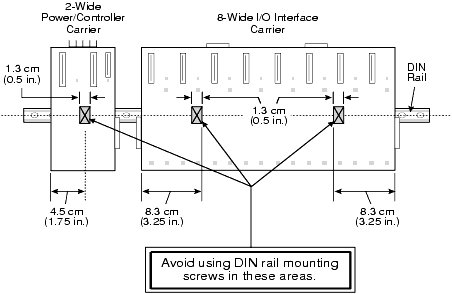
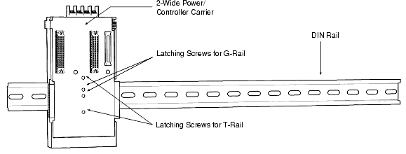
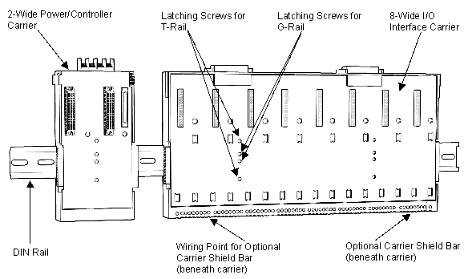
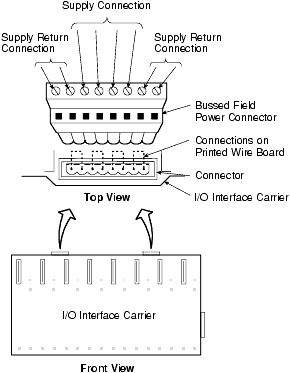
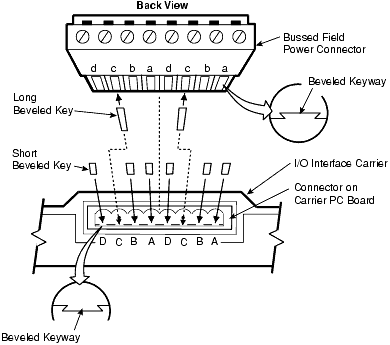
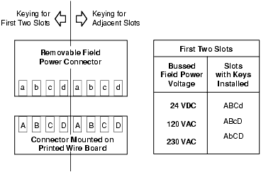
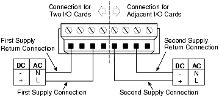
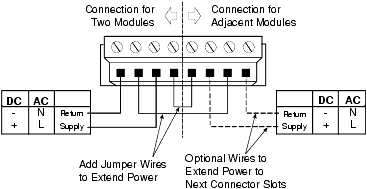

Source: DeltaV Scalable Process System — Hardware Installation and Reference Manual, D800001X312, April 2021 (Emerson). Chapter 2, "Installing Your DeltaV System," pp. 28–35.
In L01 you learned what the components are. In L02 you learned how to prepare. Now we get to the hands-on work — mounting DIN rails, attaching carriers, and wiring bussed field power. This is the lesson where theory meets the backplate. Pay close attention to the details here, because mistakes in rail mounting and power wiring are among the most common causes of installation problems.
3.1 — Installing DIN Rails and Carriers
The power/controller carriers and 8-wide I/O interface carriers install on standard 35 mm (1.38 in.) T-type or G-type DIN rails. If you use T-type rails, use the heavier 15 mm deep version — it better accommodates the weight distribution of DeltaV equipment.
Key Concept — T-Rail vs. G-Rail: DeltaV carriers use different screws for each rail type. The middle two screws are for G-rail mounting; the upper and lower screws are for T-rail mounting. If you mix them up, the carrier will not latch properly.
An optional carrier shield bar provides a connection point for field shield wires on the I/O interface carrier. This is particularly important for low-level analog signals where noise rejection is critical.
Pitfall — Never Mix Horizontal and Vertical Carriers: You cannot connect a vertical carrier to a horizontal carrier, or vice versa. You must choose one carrier configuration for your entire installation. If you mix them, the 48-pin connectors will not mate and the LocalBus will not function.
3.1.1 — DIN Rail Spacing and Screw Clearance
When mounting DIN rails on a backplate, proper spacing and screw placement are critical. The manual specifies zones where you must not place mounting screws:
An area 1.3 cm (0.5 in.) wide, centered 4.5 cm (1.75 in.) from the left side of a 2-wide power/controller carrier.
An area 1.3 cm (0.5 in.) wide, centered 8.3 cm (3.25 in.) from either side of an 8-wide I/O interface carrier.
If you place screws in these zones, the screw heads will interfere with the carrier latching mechanism and prevent proper mounting.

Figure 2-1: DIN Rail Installation — suggested spacing for rail placement on the mounting surface. (Source: p. 29)
Figure 2-2: Screw Clearance Guidelines — the red zones show where mounting screws must not be placed to avoid interference with carrier heads. (Source: p. 29)
Tip — Plan Your Rail Layout on Paper First: Use Appendix N (Installation Worksheets) to lay out rail positions, carrier positions, and screw zones before drilling any holes. A $0.50 paper worksheet saves hours of rework on a $500 steel backplate.
3.2 — Installing the 2-Wide Power/Controller Carrier
The 2-wide power/controller carrier holds the system power supply and the controller. Here is the installation procedure:
Install the DIN rail at the appropriate location.
Connect each power/controller carrier to any adjacent carriers by sliding the 48-pin connectors on the sides of the carriers together.
Turn the screws counter-clockwise on the carrier to disengage the latch. Place the carrier on the rail and tighten the screws clockwise to latch.

Figure 2-3: 2-Wide Power/Controller Carrier Installation — note the 48-pin side connectors for daisy-chaining to adjacent carriers. (Source: p. 30)
Pitfall — 2-Wide Carriers Go on the Left: The manual specifies that 2-wide carriers should be installed to the left of any 8-wide carriers. This is not a suggestion — it relates to how the LocalBus routes power and data through the carrier chain.
3.3 — Installing the I/O Interface Carrier
The 8-wide I/O interface carrier is where your I/O terminal blocks and I/O cards live. The installation is similar to the power/controller carrier but with additional steps:
Install the DIN rail at the appropriate location.
Connect each I/O interface carrier to adjacent carriers by sliding together the 48-pin connectors on the sides.
Turn the screws counter-clockwise to disengage the latch. Place on rail and tighten clockwise. Middle screws for G-rail, upper/lower for T-rail.
If installing on separate rails, connect them with a LocalBus cable from the 48-pin connector on the right side of one carrier to the 48-pin connector on the left side of the next carrier.
Install the carrier ground wiring per the grounding diagram in Appendix J.

Figure 2-4: I/O Interface Carrier Installation — 8 slots for I/O cards, with 48-pin connectors on each side for daisy-chaining. (Source: p. 31)
Key Concept — Connecting Carriers on Separate Rails: When carriers are on separate DIN rails, you use a LocalBus cable to bridge them. This cable connects the 48-pin connector on the right side of one carrier to the 48-pin connector on the left side of the next. Remember — the total LocalBus length (including all cabling) cannot exceed 6.5 m (21.3 ft).
3.4 — Bussed Field Power: The Backbone of I/O Power
Bussed field power is how power gets from your bulk power supply to the field-side I/O cards. The way this works depends on the carrier type you are using, and there are important differences between them.
3.4.1 — Horizontal and Legacy Vertical Carriers
Each pair of slots on these carriers has four screw terminals for bussed field power — two for supply and two for return. Each bussed field power connection routes power to two adjacent I/O cards.
Key Concept — Card Pairing for Field Power: On horizontal and Legacy Vertical carriers, cards 1 and 2 are paired — they must use the same field voltage level. Similarly, cards 3 and 4 are paired, and cards 5 and 6, and cards 7 and 8. However, different pairs can use different voltages. For example, pair 1-2 might be 24 VDC while pair 3-4 is 120 VAC.
Pitfall — Removing the Connector Cuts Power to Everything Downstream: If bussed field power is extended to additional I/O cards, removing the connector will break the connection between the power supply and all downstream devices. Plan your wiring so you do not need to remove connectors during live operations.
3.4.2 — VerticalPLUS Carriers
VerticalPLUS carriers are more flexible. Each individual slot has four screw terminals — two for +field power and two for −field power. This means each slot can theoretically receive power from a different source.
However, there are factory-installed jumpers: slots 1–4 are connected, and slots 5–8 are connected. Cards installed in slots 1–4 must use the same field voltage, and cards in slots 5–8 must use the same field voltage (though the two banks can differ).
Tip — Use Separate Power Feeds When Possible: The manual recommends using a separate power feed to each field power connector (a connector connects to a bank of four I/O cards). This gives you maximum flexibility and isolates faults — if one supply trips, only four cards are affected instead of eight.
3.4.3 — The Keying System
Keys supplied with the two-part connector on horizontal and Legacy Vertical carriers prevent damage to cards if an incorrect power source is connected after cards are installed. You install the keys in each field power connector based on the power source you connect to that connector.

Figure 2-5: Bussed Field Power Connector — note the four screw terminals (two supply, two return) per card pair. (Source: p. 33)

Figure 2-6: Bussed Field Power Keying for 120 VAC — the key positions physically prevent a wrong-voltage cable from being plugged in after cards are mounted. (Source: p. 34)

Figure 2-7: Bussed Field Power Keying Scheme Example — you can set up any standard that meets your needs for the keying scheme. (Source: p. 34)
3.5 — Wiring Bussed Field Power
How you wire bussed field power depends on whether you are extending power to additional cards.
3.5.1 — Single Pair (No Extension)
If bussed field power supplies only one pair of I/O cards and is not extended, connect wiring to the assigned screw terminal on the top of the I/O interface carrier.

Figure 2-8: Bussed Field Power Wiring Diagram — power feeds the first pair of I/O cards only. (Source: p. 35)
3.5.2 — Extended Power (Multiple Pairs)
If bussed field power is extended to additional I/O cards, connect wiring to the assigned screw terminal, and the power bus routes through the connector to downstream pairs.

Figure 2-9: Bussed Field Power Wiring Diagram (Extended) — power routes through the connector to downstream card pairs. (Source: p. 35)
Pitfall — Voltage Mismatch Causes Card Damage: The bussed field power connection to each carrier slot must be correct for the card being installed. Card damage will result if there is a mismatch between the field power voltage at the carrier slot and the card installed in that slot. Always double-check your voltage plan before powering up.
3.5.3 — Multiple Power Sources Warning
If more than one bussed power source is used, you must place a label near the bussed field power connectors with the following warning in English and French:
WARNING: MORE THAN ONE LIVE CIRCUIT. SEE INSTALLATION DIAGRAM. AVERTISSEMENT: CET EQUIPMENT RENFERME PLUSIEURS CIRCUITS SOUS TENSION. VOIR LE SCHÉMA D'INSTALLATION.
Key Concept — Same Voltage Across a Carrier When Possible: The manual recommends supplying the same voltage at bussed field power to all cards on a carrier whenever possible. Use clean bussed field power and apply inductive noise reduction techniques on I/O signals. Refer to Appendix K for detailed bussed field power guidelines.
Summary — What to Remember
DIN rails are 35 mm T-type or G-type; use 15 mm deep T-rails for DeltaV equipment.
2-wide carriers go to the left of 8-wide carriers; never mix horizontal and vertical carrier types.
Carriers connect via 48-pin side connectors; separate rails are bridged with LocalBus cables (max 6.5 m total).
Bussed field power on horizontal/Legacy Vertical carriers powers pairs of cards; VerticalPLUS powers individual slots (with factory jumpers connecting banks of 4).
Always use the keying system to prevent wrong-voltage connections.
Never remove a bussed field power connector while the system is live if other cards depend on it downstream.
Use voltage labels when multiple power sources are present.
Quiz — Test Your Understanding
Question 1
What size DIN rail is required for DeltaV carriers?
Show Answer
Standard 35 mm (1.38 in.) T-type or G-type DIN rails. If using T-type, use the heavier 15 mm deep version to better accommodate the weight of DeltaV equipment.
Question 2
On horizontal carriers, cards 1 and 2 share a bussed field power connection. Must they use the same voltage? What about cards 1 and 3?
Show Answer
Cards 1 and 2 must use the same field voltage level because they share a bussed field power connection. Cards 1 and 3 do not share a connection, so they can use different voltage levels.
Question 3
What is the difference in bussed field power wiring between horizontal carriers and VerticalPLUS carriers?
Show Answer
On horizontal carriers, each bussed field power connection powers a pair of two adjacent I/O cards. On VerticalPLUS carriers, each slot has its own four screw terminals for bussed field power, though factory jumpers connect slots 1-4 and slots 5-8 into banks.
Question 4
Why is the keying system important when connecting bussed field power?
Show Answer
Keys prevent damage to I/O cards by physically preventing an incorrect power source from being connected after cards are installed. The key positions correspond to specific voltage levels.
Question 5
What happens if you remove a bussed field power connector on a horizontal carrier when power has been extended to additional I/O cards?
Show Answer
Removing the connector breaks the connection between the power supply and all downstream devices. All I/O cards receiving extended power from that connector will lose power.
DeltaV Scalable Process System — Hardware Installation and Reference Manual, D800001X312, April 2021 (Emerson). Chapter 2, "Installing Your DeltaV System," pp. 28–35.